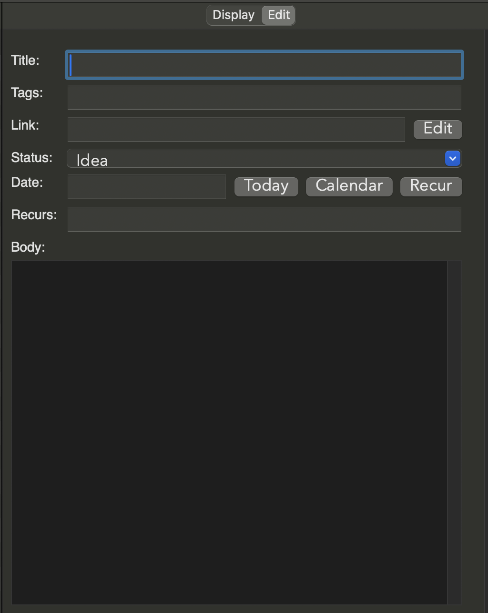
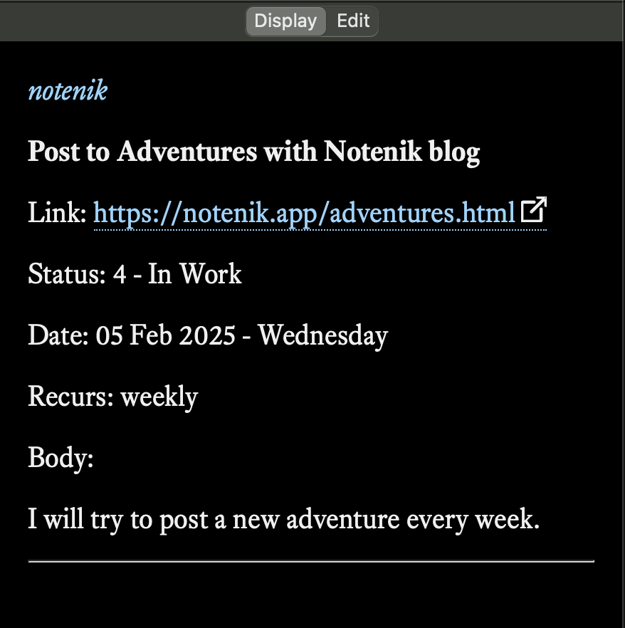
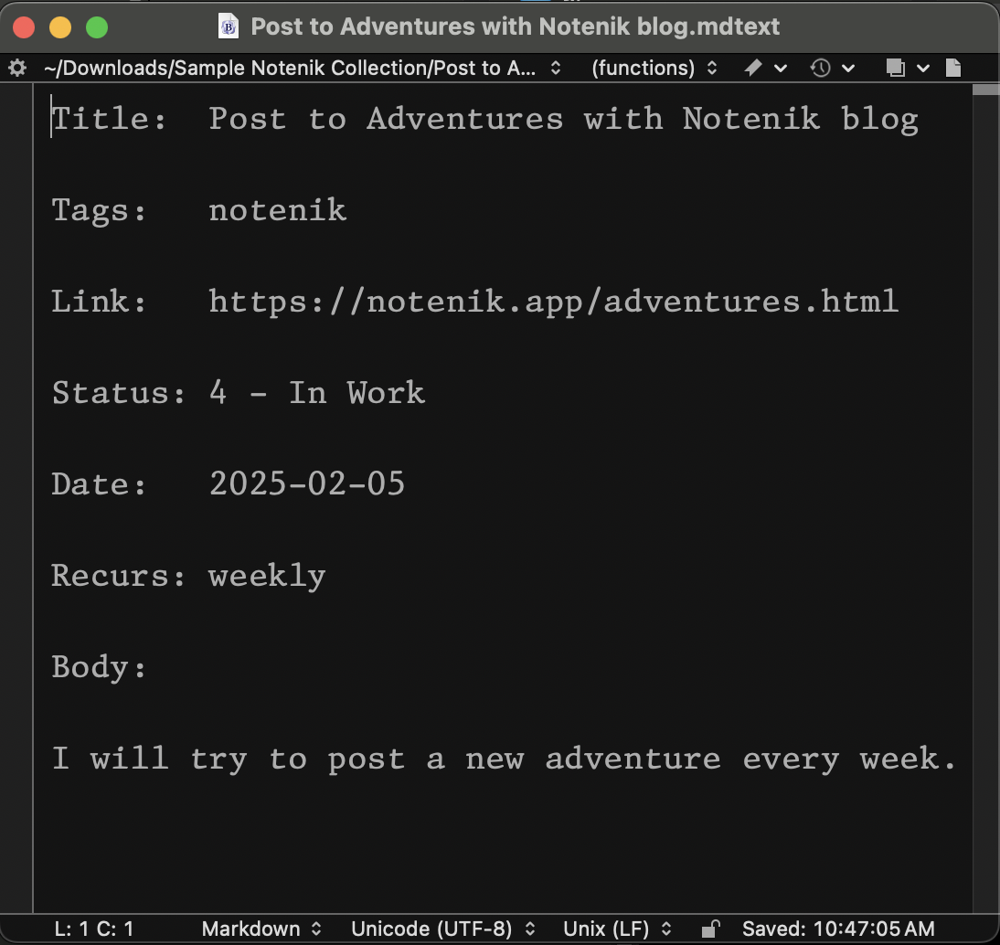

Sometimes it’s hard to figure out what makes Notenik different from all the other note-taking, Markdown-parsing, text-file-wrangling apps out there.
So let’s start with the most significant, core differentiator:
Each folder of text files managed by Notenik has its own unique template file…
And each template file defines a set of fields for the notes within that folder…
And each field is defined by a label, a type, and (sometimes) a configuration…
And the file extension for the template file specifies the file extension to be used for notes created within that folder.
Let’s look at an example of how this works in practice.
Here are the contents of a sample template file, which is just an ordinary text file that you can open with your favorite text editor. Here I’m using BBEdit.

And here’s what the Edit tab will look like when adding a new note to the collection (aka folder) using this template.

So let me just point out a few interesting bits here:
Every note must start with a Title field, and conclude with a Body field (although they can be given different labels).
In between those two, a note can have many different fields, of many different types.
The field type will, among other things, determine what sort of widget appears on the Edit tab for that field, when adding a new note within that folder, or when editing an existing note.
Some field types, such as status, can also have a configuration specified in the template. In this case, the allowable status values are being specified, and these are the values that will appear in the drop-down menu when selecting a value for this field.
So here’s what a sample note might look like after being added to this collection, and when viewed on Notenik’s Display tab.

And, just to round things out, and remove the last bit of mystery, here’s what the resulting note file might look like (again viewing with BBEdit).

And then, perhaps, I should make one final point for today’s Adventure post.
One may always edit a Notenik template file directly, if one is so inclined, and this is sometimes the best way to build some new and exotic sort of collection.
However, direct editing of the template file is generally a last resort, and Notenik offers these other ways of tailoring a template file, before resorting to direct editing.
When creating a new collection, Notenik currently offers sixteen different Starting Collection Types from which you may choose, each with a different collection template. Even when creating something new, you can help yourself by picking a good starting point from this list.
The Collection Settings window allows you to pick from several common field labels and types in order to add them to your collection template.
After initial creation, Notenik offers a handy window to Rename, Add or Remove a field, available beneath the Collection menu.
It’s generally best to exercise these options to get you as far as possible, and then perform direct editing of your template file to implement any final tweaks.
Hopefully this post has helped to explain one of the key ways in which Notenik differs from other similar apps.
Now, as to why Notenik works this way…?
Well, when creating a list of items, with each row containing a number of columns, I often wished to have one or more columns containing some significant amount of text… but then a traditional spreadsheet app quickly gets awkward and unwieldy.
And then when writing some significant chunks of text, I often wished to organize many such chunks into a coherent collection, and then sort, filter and format those chunks using some set of discrete fields, in addition to the more free-form bits of text… but then a traditional document editing app proves disappointing.
So Notenik attempts to provide a happy medium in between these two extremes, and the collection template file is the key to pulling this all together.